Case Study: Evaluating Real-Time FIR Filter Implementation on FPGA
When someone asks, "How do you compute math on an FPGA?", or when explaining digital circuit design concepts to software engineers, verbal explanations alone often fall short.
This article uses a concrete case study to step through the architectural design of a Finite Impulse Response (FIR) digital filter on an FPGA—from formal requirement derivation and block partitioning down to real-time timing budget verification on paper—before writing a single line of RTL code.
1 Introduction
Suppose we are tasked with building a real-time audio FIR filter: capturing live audio from an analog input, streaming it through a digital filter, and immediately feeding filtered output to speakers.
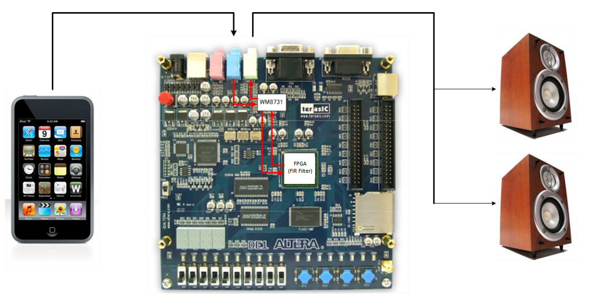
There are two fundamental approaches to this problem:
- Software Approach: Ingest audio samples into a PC or MCU, process sequentially in software, and output.
- FPGA Hardware Approach: Synthesize dedicated pipelined hardware datapaths to process samples in parallel.
In practice, dedicated DSP microprocessors or custom ASICs are viable options. This article focuses strictly on comparing general-purpose sequential execution vs FPGA hardware architectures.
Under hard real-time constraints, the latency requirement is identical regardless of platform: computation for each audio sample must finish before the next sample arrives. At a standard 44.1 kHz sampling rate, the available time budget per sample is 1 / 44,100 ≈ 22.68 µs. If processing falls behind, buffer overflows and sample dropping occur. On a desktop PC, 22.68 µs is trivial, but on small microcontrollers or multi-tasking systems, latency jitter is hazardous. In our FPGA design, the architectural target specifications are:
| รายการ | Value |
|---|---|
| Audio codec | Wolfson WM8731 Audio Codec |
| Filter | FIR, 128 Taps |
| Numeric format | IEEE 754 Single-Precision Floating Point (float32) |
| Sample rate | 44.1 kHz |
| Channels | Stereo (Left / Right) |
2 Design Requirements
The system implements a stereo digital audio filter where the FPGA interfaces with a Wolfson WM8731 CODEC over I2S/DSP serial audio streams. FIR filtering is computed independently for Left and Right channels using a fixed-point → float32 → FIR → fixed-point pipeline (chosen here to demonstrate hardware floating-point architecture, though fixed-point is commonly utilized in commercial audio DSP).
| Category | Parameter | Specification / Requirement |
|---|---|---|
| Digital audio I/O | Resolution | 24-bit |
| Channels | 2 Channels (Left / Right) | |
| Sample rate | 44.1 kHz | |
| Audio Format | Stereo | |
| WM8731 clock | MCLK | 11.2896 MHz (= 256 × Fs) |
| WM8731 control | Control interface | I²C |
| WM8731 audio | Digital audio interface | DSP / PCM Mode |
| FIR | Structure | Direct-Form Convolution |
| Tap Count | 128 | |
| Numeric format | IEEE 754 single-precision floating point, 32-bit |
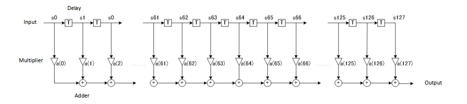
3 System Architecture & Design
3.1 Architecture Overview
From the specifications above, the system partitions into 3 primary submodules:
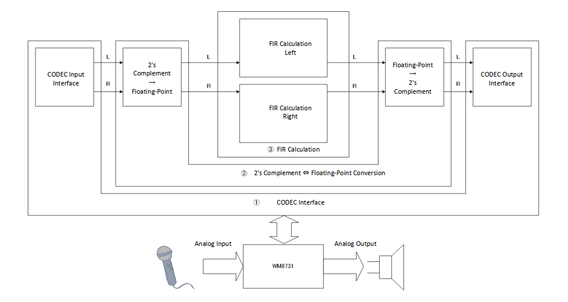
- CODEC Interface: Handles I²C register initialization during startup and manages continuous serial audio reception/transmission (I2S/DSP).
- Format Conversion (Fixed ⇔ Float): Converts 24-bit integer samples to IEEE 754 float32 before filtering, and converts float32 outputs back to 24-bit fixed-point for the DAC.
- FIR Engine: Executes 128-tap convolution with parallel, independent datapaths for Left and Right channels.
3.2 Clock Domains
The FPGA operates on a 50 MHz primary system clock, with an internal PLL synthesizing the required audio master clock (MCLK):
| Clock Domain | ความถี่ | Destination |
|---|---|---|
| System clock | 50 MHz | Conversion modules & FIR Engine |
| CODEC MCLK | 11.2896 MHz | WM8731 Master Audio Clock (MCLK) |
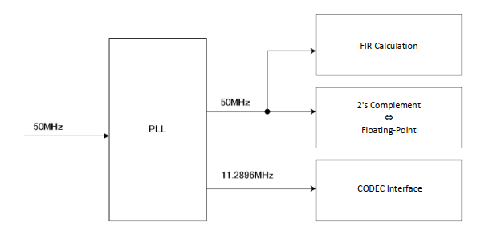
11.2896 MHz / 256 = 44.1 kHzThe 256 × Fs ratio is a standard master clock configuration supported by the WM8731 for 44.1 kHz sampling.
3.3 Audio CODEC Interface (WM8731)
In this system, the Wolfson WM8731 serves as both ADC and DAC:
- ADC Section: Digitizes incoming analog signals from
LLINEIN/RLINEINinto digital PCM samples. - DAC Section: Converts processed digital samples from the FPGA back into analog line output at
LOUT/ROUT.
The CODEC exposes two physical interfaces to the FPGA:
- I²C Control Bus: Programs configuration registers at power-on (audio format, word length, sample rate mode, volume control, and master/slave mode).
- Digital Audio Serial Bus: Continuously streams serial audio data using
BCLK(bit clock),ADCLRC/DACLRC(frame sync / left-right clock), andADCDAT/DACDAT(serial data lines).
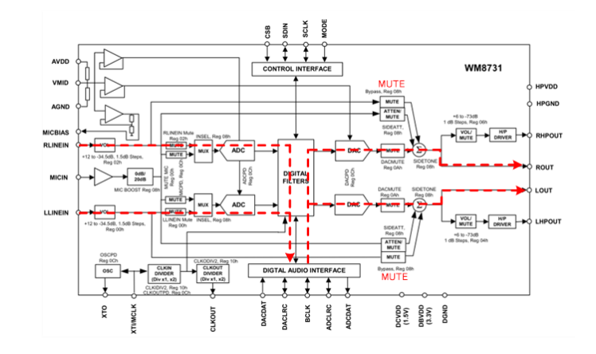
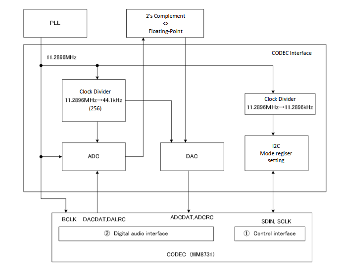
3.4 Fixed-Point ⇔ Floating-Point Conversion
The WM8731 streams 24-bit signed two's-complement fixed-point data, while our FIR calculation engine utilizes IEEE 754 float32. We must convert incoming 24-bit fixed-point into floating-point before convolution, and convert float32 results back to 24-bit fixed-point before transmitting to the DAC.
The hardware pipeline converts 24-bit fixed-point → Q32.32 (64-bit) → IEEE 754 float32.
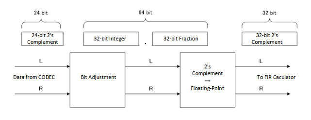
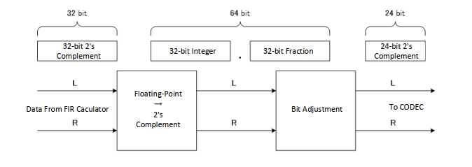
3.5 Pipelined FIR Computation Architecture
An N-tap FIR filter executes convolution according to the difference equation:
y[n] = Σ(k=0..127) a[k] × s[n-k]where a[k] represents filter tap coefficients and s[n-k] represents the current and historical sample history.
We decompose computation into two decoupled phases: Fully pipeline the multiplications first, then accumulate products in parallel. Because each tap multiplication a[k] × s[n-k] is completely independent, products can be pushed through a single deeply pipelined multiplier at full throughput without pipeline stalls.
If we naively executed multiply-accumulate (MAC) serially in sequence, the accumulator would stall waiting for the recursive feedback sum from the previous tap on every step. Decoupling multiplication and accumulation eliminates feedback stalls.
a0*s0 = result1
result1 + a1*s1 = result2 ← Must wait for result1 (feedback dependency stall)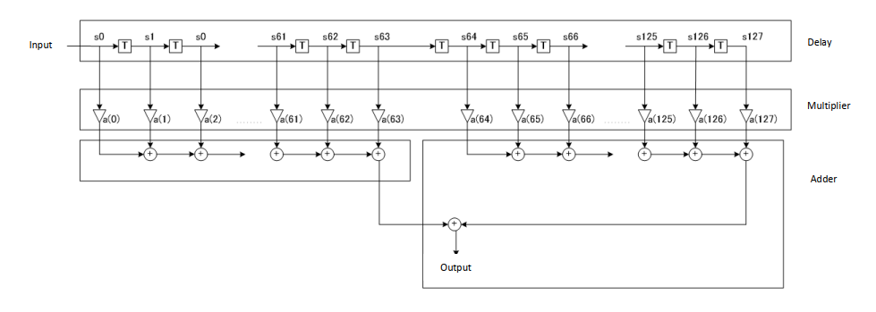
In hardware RTL, the core partitions into Delay Line, Multiplier, and Dual Accumulator blocks, utilizing FPGA on-chip Block RAM (BRAM) for sample delay lines, coefficient storage, and intermediate product FIFO buffers.
ทั้ง Left และ Right ใช้โครงสร้างเดียวกัน โดยมีส่วนหลักดังนี้:
- Delay Line (
SAMP_RAM): Circular buffer storing the 128 latest sample vectorss[n]throughs[n-127]. - Coefficient Storage: Dedicated ROM/BRAM holding tap weights
a[0]througha[127]. - Pipelined Multiplier: Single high-frequency floating-point multiplier time-multiplexed across all 128 taps at 1 product per cycle.
- Dual Accumulator: Splits 128 products into two 64-sample banks summed in parallel to yield final convolution output
y[n].
ผลคูณที่ได้จะถูกเก็บแยกเป็น 2 กลุ่ม กลุ่มละ 64 ค่า จากนั้นใช้ accumulator สองสายคำนวณผลรวมของแต่ละกลุ่มแบบขนาน แล้วนำผลรวมทั้งสองมาบวกกันเป็น output สุดท้าย วิธีนี้ช่วยลดจำนวน multiplier และ DSP block เมื่อเทียบกับการสร้าง multiplier ครบ 128 ชุด ขณะเดียวกันก็ยังแบ่งงาน accumulation ให้ทำงานขนานกันได้
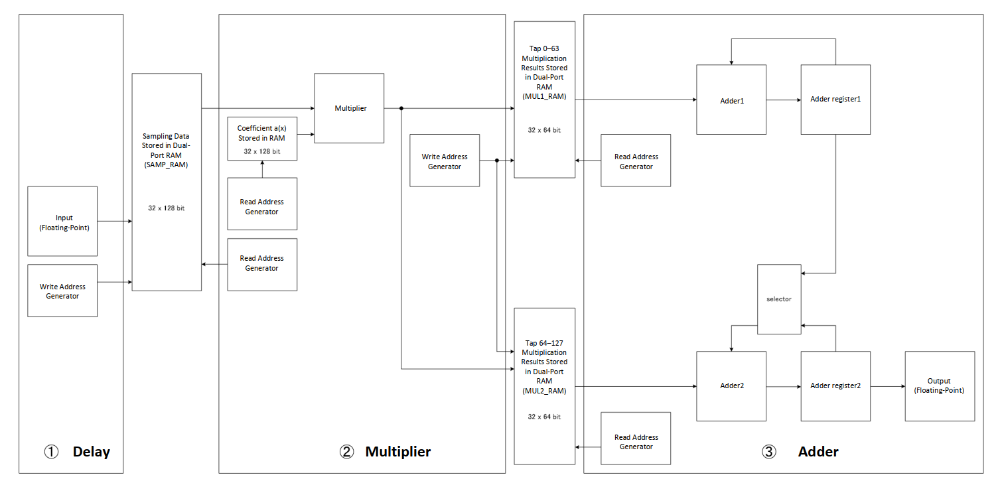
3.6 Real-Time Latency & Timing Budget Evaluation
With a 50 MHz system clock, the hard real-time sample arrival period of 1 / 44,100 ≈ 22.68 µs translates into a discrete clock cycle budget of:
50,000,000 / 44,100 ≈ 1,133.8 cyclesHence, our architectural deadline is strict: processing for each sample must complete in under 1,133 clock cycles. We tabulate the paper latency breakdown below:
| Processing Stage | Latency โดยประมาณ | Notes / Derivation |
|---|---|---|
| Multiplier 128 taps | 133 cycles | 128 cycles continuous stream feed + 5 cycles pipeline flush latency |
| Adder | 576 cycles | 64 products × 9 cycles latency utilizing 2 parallel accumulators |
| Final add + control overhead | 20 cycles | State machine transitions and handshaking margin |
| Total Required Latency | 729 cycles |
Based on our paper analysis, the entire datapath executes in approximately 729 clock cycles, well within our budget of 1,133 cycles per sample (leaving a comfortable 35% timing margin). We mathematically prove the architecture guarantees real-time throughput.
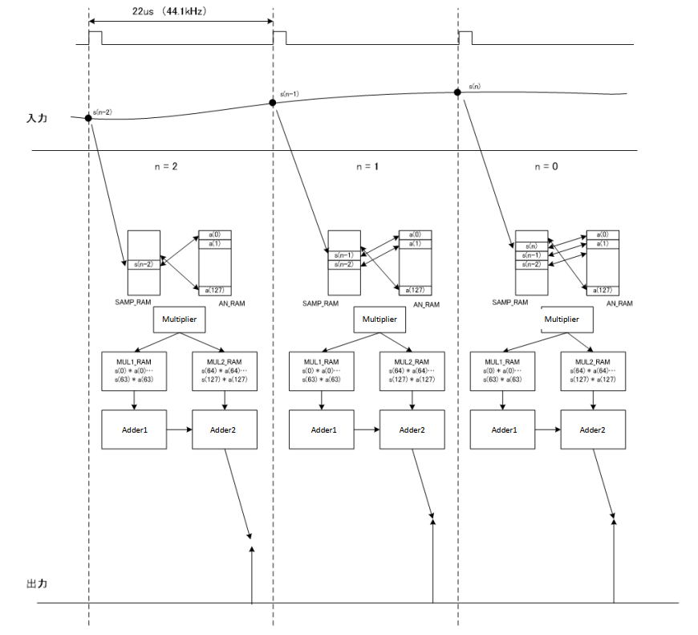
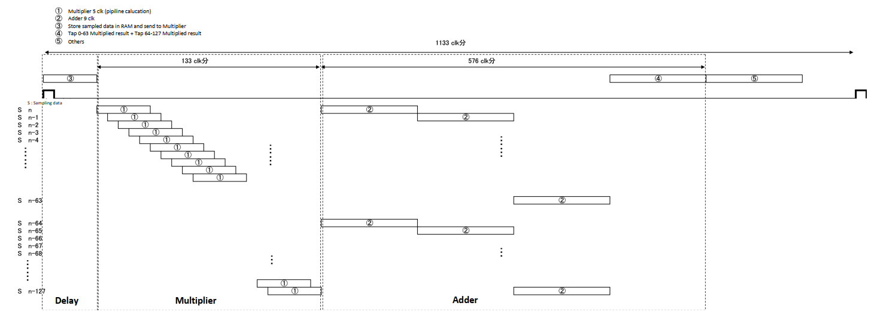
The 5-cycle multiplier and 9-cycle adder latencies are realistic representative parameters for demonstration. In physical synthesis, exact latency and initiation interval depend on vendor IP configurations (Xilinx Floating-Point Operator), target clock frequency, and FPGA silicon grade.
3.7 Summary of Results
Architectural evaluation confirms that a 128-tap FIR filter at 44.1 kHz is entirely feasible on FPGA at 50 MHz, requiring ~729 cycles out of 1,133 available cycles. Once the mathematical timing proof passes, development safely advances to RTL implementation and post-place-and-route resource audits.
During physical FPGA implementation, verify the following checklist:
- Exact latency and initiation interval of synthesized floating-point IP cores
- DSP slice, BRAM, and logic slice utilization budgets
- Static Timing Analysis (STA) timing closure at target frequency
- Circular buffer address wrapping and memory read latency alignment
- Clock Domain Crossing (CDC) synchronization between system clock and CODEC audio clock
- Rounding, saturation, and overflow clipping logic when converting float back to 24-bit fixed-point
3.8 Technical Design Notes
Why Floating-Point?
Float32 was chosen to allow direct bit-level verification against Python/MATLAB scientific simulation models without quantization scaling artifacts. However, floating-point consumes significantly more DSP slices, logic cells, and pipeline stages than fixed-point. In resource-constrained applications, integer fixed-point DSP remains the industry benchmark.
Further Optimization via Adder Trees:
While dual serial accumulation was selected for control simplicity, throughput can be exponentially accelerated using an Adder Tree (binary parallel reduction tree). By adding product pairs in parallel (O(log2 N) depth instead of O(N)), accumulation latency drops from 576 cycles to under 20 cycles at the expense of additional adder logic.
4 Perspective: When is an FPGA Truly Necessary?
Before selecting an FPGA for mathematical computation, engineers must thoroughly evaluate workload, deadlines, power, and development cost to answer both "Can it be done?" and "Should it be done on FPGA?":
- Offline / Batch Workloads: Batch file transcoding or non-deadline analytics do not warrant FPGA complexity; modern CPUs and GPUs excel at throughput.
- Hard Real-Time Determinism: Zero-jitter sample deadlines (radar, audio DSP, motor control, high-frequency trading) represent the ideal FPGA domain because hardware execution timing is cycle-deterministic.
- Massive Pipelined Parallelism: High-bandwidth multichannel data processing where customized hardware pipelines achieve orders-of-magnitude lower latency than sequential CPU interrupts.
- Specialized Physical I/O: Tight integration with high-speed ADCs/DACs, custom serial protocols, or multi-gigabit transceivers directly into the processing fabric.
Designing algorithms in hardware requires an entirely different mental model than writing sequential software. One must account for nanosecond clock margins, silicon placement, routing delays, and spatial memory routing. Hardware computation is not just writing equations—it is orchestrating when each gate fires, what physical silicon it consumes, and how data streams across parallel pipelines.